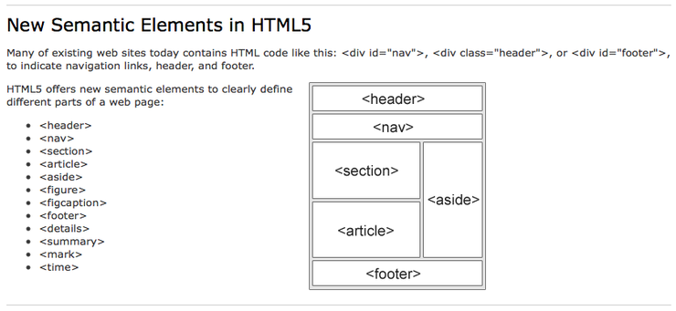

HTML5의 시멘틱 태그
1. 시멘틱 웹
기계적인 검색 엔진은 어떠한 태그가 어떠한 기능을 하는지 분별할 수 없고 웹 페이지 에서 데이터를 효율적으로 추출할 수 없다.
이를 해결하고자 특정한 태그에 의미를 부여해 서 웹 페이지를 만드는 시도가 시작된다. 이를 시멘틱 웹이라고 표현한다.
HTML5는 시멘틱 태그를 사용해 시멘틱 웹을 구현한다.
기존에 HTML4에서는 단락을 구성하기 위해서는 <DIV>태그를 사용하였다. 하지만 HTML5에서는 단락에도 특정한 의미를 부여하여 태그를 지정할 수 있다.
ex) 검색로봇이 어떤 기사를 검색하기 위해 모든 웹페이지의 <div>태그를 찾기 보다는 <article>태그의 내용만을 검색하는 것이 빠르다.
2. HTML5의 시멘틱 태그
<header>
페이지나 절의 헤드 영역을 정의
<footer>
페이지나 절의 푸터 영역을 정의
<nav>
페이지나 절의 내비게이션 영역을 정의
<section>
페이지의 논리적 영역 또는 내용의 그룹을 정의
<article>
하나의 글 또는 완결된 내용을 정의
<aside>
부차적인 또는 관련 있는 내용을 정의
